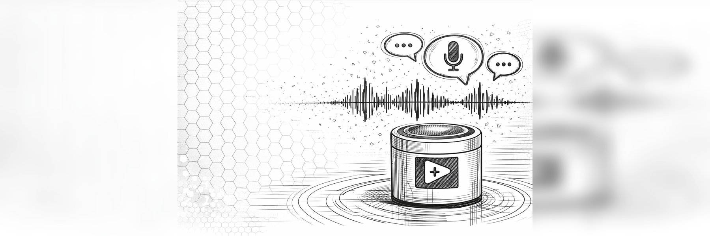

Project
Develop a functional prototype of a voice assistant capable of receiving spoken commands and executing programmed responses or actions.
A voice recognition and response system is being developed through programming in LabVIEW. The project aims to simulate the operation of a virtual assistant through command processing, control logic, and response output. The system is currently in the development and functionality integration phase.
System design, control logic development and programming, and prototype testing.
Project in development aimed at simulating voice interaction.